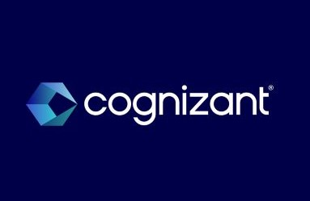

About Me
Hi, I am Sharadha Shivakumar. I am currently pursuing my Masters in Computer Science from George Mason University.
My expected year of graduation is May 2024.
I have contributed a few through my learnings in BE undergraduate for one of the projects in the renowned company Cognizant Technology Solutions as a Microsoft CRM developer. I am currently seeking an internship in Summer 2023 for the role of software engineer or data analyst . I am always open to learning and a person who loves challenges. I would like to explore more in the field of computer science and with that knowledge I would like to prove to be a valuable asset to the company I am working.
SKILLS
EDUCATION
EXPERIENCE
- Proficient Languages
Python, C, HTML, CSS , MySQL
- Familiar Languages
Java, C++, Dotnet, Javascript, ASP, Entity Framework
- Eclipse, Microsoft Visual Studio, IDE
- Matplotlib, Numpy, Pandas, seaborn, Scikitlearn, JupyterNotebook, NLTK
- Microsoft Dynamics 365: MB900, MB910
- Current- George Mason University (Expected Graduation- May 2024)
Masters in Computer Science (MS)
- BE- Rajalakshmi Engineering College (Chennai,India 2017-21)
Bachelor of Engineering in Computer Science and Engineering
CGPA- 8.85/10 First class with Distinction Pass

- Programmer Analyst Trainee in Cognizant Technology Solution (Chennai,India 2021-April 2022)
Role - Microsoft CRM Developer for RBS project.
Responsible for consulting with business analyst in each step to understand the client requirements and developing using Microsoft CRM, prepare documentation and forwarding to testing team.
Implemented skills such as Microsoft Dynamics MB-910, ,MB-900,Javascript, C#, web development.
Accountable for communicating within other developers in the team and working efficiently.
Expereince in ticketing using Jira.
Increased the overall productivity of the project by 5%.